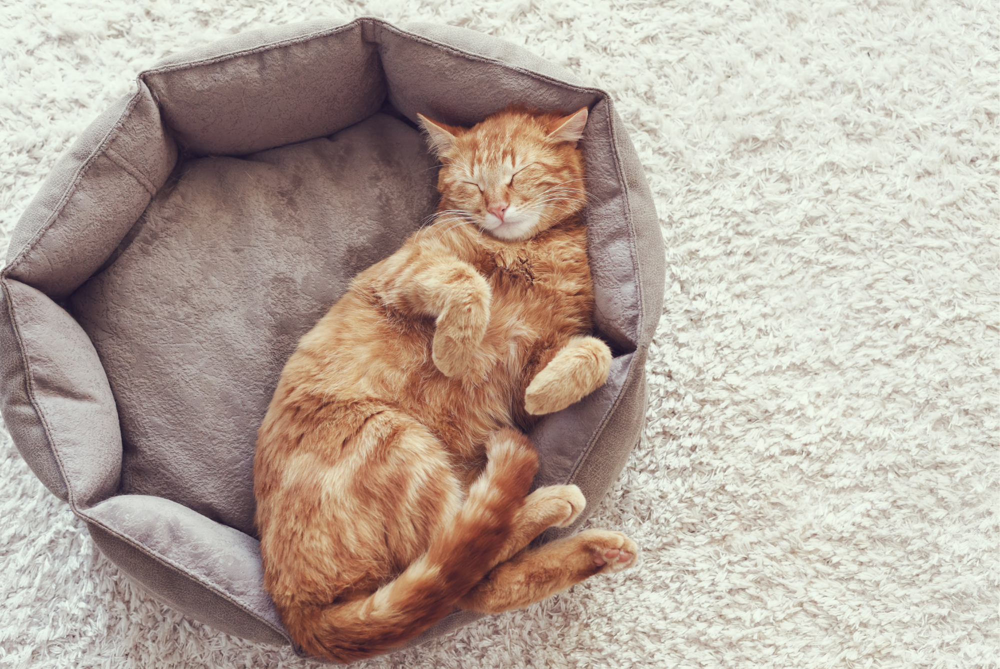

If you have pet allergies, the idea of a “hypoallergenic” dog or cat can sound like the perfect solution. You get the companionship of a pet without the sneezing, itchy eyes, congestion, or other symptoms that can come with exposure.
But there is an important distinction between hypoallergenic and allergen-free.
There is no dog or cat that is completely free of the proteins that can trigger pet allergies. Some breeds may produce or spread fewer allergens than others, but that does not necessarily mean someone with a pet allergy will be symptom-free around them.
What Does “Hypoallergenic” Actually Mean?
The word hypoallergenic generally means something is less likely to cause an allergic reaction. It does not mean that it cannot cause one.
When it comes to pets, the term is most commonly used to describe certain breeds that are believed to produce or distribute fewer allergens. For dogs, breeds such as poodles, bichon frises, and Portuguese water dogs are often marketed as hypoallergenic. Certain cat breeds, including Siberian cats and Balinese cats, are sometimes described this way as well.
The problem is that pet allergies aren't caused by fur itself.
Instead, people are typically reacting to proteins found in an animal's saliva, skin flakes (dander), urine, or other secretions. These proteins can become attached to hair and spread throughout the home.
That means a pet that sheds very little can still trigger an allergic reaction.
So Why Are Some Breeds Called Hypoallergenic?
There are a few reasons certain breeds may be easier for some allergy sufferers to tolerate.
Less shedding
Pets that shed less may leave fewer allergen-containing hairs around the home. Less shedding can potentially reduce how easily allergens are distributed through the environment.
But less shedding doesn't necessarily mean less allergen production.
Different coats
Some breeds have hair that grows continuously rather than shedding in the same way as breeds with traditional fur coats. This can keep more hair and associated material contained until the pet is groomed.
However, allergens can still be present on the animal's coat and skin.
Potential differences in allergen production
Individual animals can also produce different amounts of specific allergenic proteins. This is particularly important with cats.
The primary cat allergen is Fel d 1, a protein produced mainly in the cat's salivary and sebaceous glands. Cats spread it onto their fur through grooming, and the allergen can subsequently become airborne or settle onto furniture, clothing, bedding, and other surfaces.
Importantly, studies have found substantial variation in allergen levels between individual cats. That means even two cats of the same breed may not necessarily produce or distribute the same amount of allergen.
Does This Mean a “Hypoallergenic” Pet Is Safe for Someone With Allergies?
Not necessarily.
For someone with a mild allergy, a particular low-shedding breed or individual animal might be more manageable than another pet. But there is no guarantee that a person with allergies will tolerate a so-called hypoallergenic pet.
In fact, spending time around an individual animal before adopting it can be more informative than relying solely on the breed's reputation.
You may also react differently depending on how much time you spend around the animal and where the exposure occurs. A short visit with a pet is very different from living with one, where allergens can accumulate on sofas, carpets, bedding, clothing, and other surfaces over time.
What About “Hypoallergenic” Cats?
Cats are particularly complicated because Fel d 1 is produced by cats regardless of whether they have long, short, or relatively low-shedding coats.
There is no universally allergen-free cat breed.
Some individual cats may produce less Fel d 1 than others, but breed alone shouldn't be considered a guarantee of low allergen exposure.
This is one reason why someone who has previously reacted strongly to cats shouldn't assume that choosing a particular breed will eliminate their symptoms.
What Can Allergy Sufferers Do If They Want a Pet?
Avoiding the allergen completely is generally the most reliable way to prevent allergic reactions. But for people who already have a pet or are considering adoption, reducing exposure can become an important part of managing allergies.
Some approaches include:
- Keeping pets out of the bedroom, where people spend a significant amount of time.
- Washing hands after petting or handling the animal.
- Regular grooming and bathing when appropriate for the animal.
- Cleaning furniture, rugs, and bedding regularly.
- Using a HEPA-filter vacuum or air cleaner to help reduce airborne and settled particles.
- Washing pet bedding frequently.
- Reducing allergen reservoirs such as heavily upholstered furniture and carpets when practical.
- Discussing allergy treatment options with an allergist if symptoms remain difficult to control.
These strategies aren't necessarily about making the pet “hypoallergenic.” Instead, they focus on reducing the amount of allergen a person encounters.
The Bottom Line
A hypoallergenic pet isn't an allergen-free pet.
Certain breeds or individual animals may produce, shed, or distribute fewer allergens, potentially making them easier for some people with allergies to live with. But allergic reactions depend on the specific allergenic proteins involved, the individual animal, and the amount of exposure.
So if you're allergic to pets, don't treat the word “hypoallergenic” as a guarantee.
Before bringing an animal home, spend time with the specific pet if possible and consider speaking with an allergist about your individual allergy. And remember that managing pet allergies isn't only about the animal itself. The allergens can remain on furniture, bedding, clothing, carpets, and other surfaces long after the pet has moved to another room.
For allergy sufferers, the question isn't necessarily “Is this pet hypoallergenic?”
It may be more useful to ask: “How much allergen am I likely to encounter—and how can I reduce my exposure?”